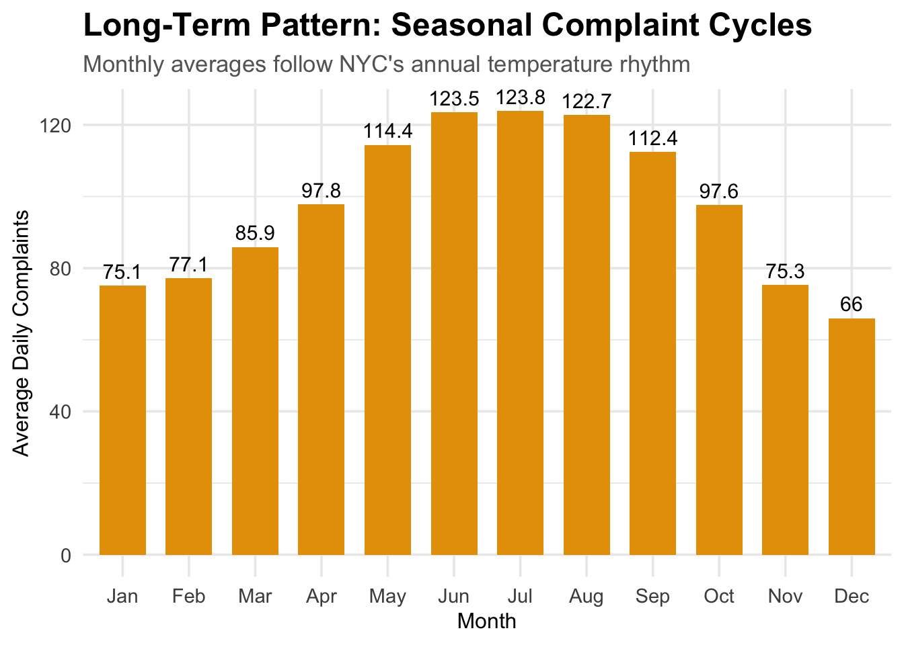
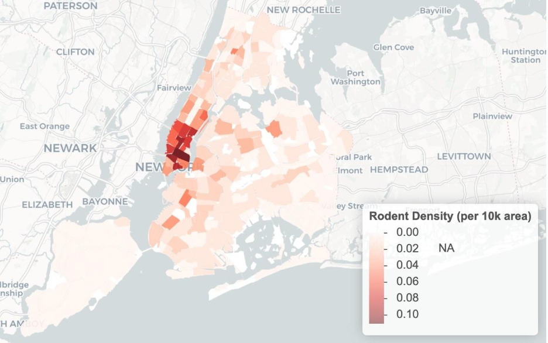
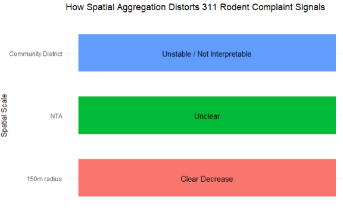

What Do 311 Rodent Complaints Really Measure?
Introduction
Every year, thousands of New Yorkers use the city’s 311 system to report rodent sightings. These reports are frequently mapped and referenced in news coverage, academic research, and city planning, often treated as a direct indicator of where rats are most active. At first glance, such maps appear to show clear spatial patterns of infestation. However, they may be telling a more complicated story.
Rather than asking where rodent complaints are highest, this study asks a more fundamental question:
Do 311 rodent complaints reflect actual rat activity, or do they primarily reflect human behavior and reporting patterns?
This distinction is critical for urban policy. If complaint data accurately capture rat ecology, they offer a low-cost tool for monitoring urban pest activity. However, if complaints are shaped by factors such as weather visibility, neighborhood demographics, institutional design, and civic engagement, then complaint volume reflects human exposure and reporting behavior as much as rat presence.
To address this question, we decompose the overall research question into six targeted sub-questions, each isolating a distinct mechanism that may shape observed complaint patterns. Specifically, we examine the roles of weather conditions, proximity to parks, neighborhood demographics, restaurant infrastructure, spatial aggregation, and institutional differences in reporting systems.
Prior Literature and Policy Context
In 2023, Local Law 110 required the New York City Department of Health and Mental Hygiene (DOHMH) to formalize Rat Mitigation Zone (RMZ) designations using data-driven criteria, with 311 rodent complaints serving as a central input alongside inspection results and violation records.1
However, complaint volume is not a neutral signal. Elevated 311 activity both reflects reported rat conditions and triggers inspections and enforcement, making complaints simultaneously an outcome and a driver of policy response.2
Prior research shows that 311 reporting varies systematically by neighborhood income, education, civic engagement, and trust in government, rather than underlying environmental conditions alone.3
Together, this literature indicates that 311 complaints do not directly measure rat prevalence, motivating this study’s focus on identifying which mechanisms meaningfully drive complaint volume.
Significant Drivers of 311 Rodent Complaints
Weather and Visibility Effects
Among all factors examined, weather emerges as one of the most statistically significant and consistent predictors of 311 rodent complaint volume. Complaint patterns closely track human outdoor activity, which increases in warm, dry conditions and declines during cold or rainy weather.
Complaints follow New York City’s temperature cycle, reaching their lowest levels in winter and peaking in summer. Importantly, this effect is not purely seasonal. Even within the same month, sunny days consistently generate more complaints than rainy days, regardless of season.
Statistical models indicate that weather explains a substantial share of daily variation in complaint volume. These findings suggest that weather primarily influences rat visibility and human exposure, rather than underlying rat abundance.

These findings indicate that weather primarily influences rat visibility and human exposure, not necessarily rat abundance. Without adjusting for weather, summer complaint spikes may be misinterpreted as worsening infestations rather than increased outdoor activity. To address this, we construct a Weather Favorability Score that standardizes temperature and precipitation effects, allowing complaint data to be interpreted more accurately.
NoteComplete Technical Analysis Available
For the full statistical models, code, and detailed methodology, see: Shreya’s Individual Report
Demographic Reporting Factors
Regression analysis of New York City neighborhoods reveals a significant limitation of using 311 complaint data as a proxy for rodent activity: demographic factors influence complaint rates almost as much as the actual presence of rats. Demographic characteristics alone explain 18.8% of the variation in 311 complaint rates. As a result, two neighborhoods with similar underlying rat populations can generate vastly different numbers of complaints due to differences in income, education, and civic engagement patterns.

These findings challenge common assumptions about reporting behavior. Notably, income and education have opposite effects. Higher-income neighborhoods file significantly fewer complaints, likely because wealthier residents have the time and financial resources to hire private exterminators or resolve issues through building management rather than reporting to 311. In contrast, neighborhoods with higher proportions of college-educated residents file significantly more complaints, suggesting that education increases civic engagement and familiarity with government reporting systems.
Language barriers show no statistically significant effect, indicating that multilingual 311 services may be effective or that language is not the primary obstacle to reporting.

This reporting bias raises important equity and public health concerns. If pest control resources are allocated based solely on complaint volume, agencies risk over-serving highly educated neighborhoods while under-serving both lower-education areas and high-income neighborhoods where rodent problems are addressed privately. Communities facing genuine public health threats from rodent infestations may therefore remain underrepresented in official data simply because residents are less likely to file complaints.
To address these biases, complaint data should be statistically adjusted for demographic factors and combined with objective measures such as inspections and field observations. Recognizing that 311 complaints capture both rat presence and community reporting behavior is essential for ensuring that pest control resources reach the neighborhoods that need them most.
NoteComplete Technical Analysis Available
For the full statistical models, code, and detailed methodology, see: Rachel’s Individual Report
Factors Commonly Assumed to Matter, but Show Limited or No Effect
Proximity to Parks
We next examined whether neighborhoods closer to parks reported more 311 rat complaints, based on two common assumptions: first, that rats are more visible near parks due to the open space and fewer visual obstructions; second, that parks may serve as a rat habitat because of vegetation, soil, and shelter, making nearby areas natural hotspots for sightings.
Across multiple statistical analyses, our results consistently challenged both assumptions.
The choropleth map shows that the highest volumes of rat complaints are concentrated in densely built neighborhoods rather than in areas dominated by large park spaces. This pattern suggests that park-rich neighborhoods are not the primary drivers of citywide reporting volume.

The ridge plot further indicates that while rat reports frequently occur within several hundred feet of parks, the overall spatial distribution of reports remains remarkably stable over time.
The distinction becomes clearer in the proportional stacked bar chart, which shows that the majority of rat reports occur more than 500 feet from parks, and primarily originate from residential and commercial locations. Even though sightings may cluster near parks at a local scale, these areas account for a relatively small share of total reports citywide.

Statistical results reinforce these visual findings. The bootstrap analysis demonstrated a clear increase in reported rat activity as distance from parks increased. Neighborhoods more than 500 feet from a park area produced an overwhelming majority of rat complaints.
Together, these results indicate that while parks may influence the visibility of individual rat sightings, they do not drive the overall volume of 311 rodent complaints. Our analysis provides evidence that reporting volume is shaped more by the everyday urban environment rather than by ecological features like parks. Parks may host rats and occasionally make them easier to spot, however they are not the primary drivers of rat complaints across New York City.
NoteComplete Technical Analysis Available
For the full statistical models, code, and detailed methodology, see
Geraldine’s Individual Report
Structural and Institutional Drivers of Reporting Patterns
Beyond environmental conditions and neighborhood demographics, 311 rodent complaints are strongly shaped by how cities structure reporting systems, aggregate space, and design public-facing infrastructure. These factors do not change rat populations directly, but they substantially influence when, where, and how residents observe and report rodents. Together, they explain why complaint patterns often diverge from underlying ecological conditions.
Rats, Reports, & City Systems: NYC vs. Chicago
To assess the role of institutional design, we compare reported rat activity in New York City and Chicago. Although both cities face persistent rodent challenges, their reporting systems differ. New York emphasizes resident-initiated reporting and transparency, while Chicago’s system is more closely tied to scheduled inspections and baiting.
Using ZCTA-level monthly data from 2010 through August 2025, we compare rat-related complaints across the two cities while controlling for weather, unemployment, seasonality, and neighborhood characteristics. Neighborhoods are grouped into comparable socioeconomic types using census data and clustering methods.
Results show strong temperature effects in both cities.

Most importantly, New York City consistently reports 20–50 fewer rat complaints per month than comparable Chicago neighborhoods, holding constant environmental and socioeconomic factors. The gap is largest in lower-income neighborhoods and smaller in more affluent areas.

These findings indicate that observed differences in rat complaints are driven primarily by institutional reporting structures rather than underlying rat populations.
NoteComplete Technical Analysis Available
For the full statistical models, code, and detailed methodology, see: Davids’s Individual Report
Restaurant Infrastructure and Visibility Effect
Restaurant-related activity influences 311 rodent complaints primarily through visibility rather than internal sanitation conditions. While rodent-related restaurant inspection violations are concentrated in Midtown and Lower Manhattan, these areas do not overlap with neighborhoods that generate the highest volumes of 311 complaints. Instead, complaint hotspots are concentrated in dense residential neighborhoods in Upper Manhattan and parts of Brooklyn and Queens.

This divergence highlights a key distinction between regulatory findings and public reporting behavior. Restaurant inspections capture rodent conditions inside establishments, whereas 311 complaints reflect what residents and pedestrians encounter in shared public space. As a result, areas with frequent internal violations are not necessarily the same areas where residents report the most rodent activity.

The expansion of outdoor dining aligns more closely with public reporting patterns than restaurant inspection outcomes. Neighborhoods with higher concentrations of outdoor dining structures tend to report more rodent complaints, indicating that street-level exposure, visible food sources, and public waste accumulation drive reporting behavior more than unseen kitchen conditions.
Although the relationship is modest, it is consistently stronger than the association between complaints and internal restaurant violations. This suggests that 311 data are more responsive to visible, external infrastructure than to regulatory hygiene failures occurring behind closed doors. In practice, complaint volume reflects perceived nuisance and exposure rather than formal inspection outcomes, reinforcing the role of visibility in shaping rodent reporting patterns.
NoteComplete Technical Analysis Available
For the full statistical models, code, and detailed methodology: Wing’s Individual Report
Impact of Spatial Scale on 311 Rodent Complaints
To examine whether 311 rodent complaints reflect actual rat activity or resident reporting behavior, the focus was on how this relationship changes across different geographic scales. The used approach compares 311 complaint patterns before and after successful rodent inspections, since a passed inspection indicates acceptable rat conditions at a specific location. These comparisons were conducted using repeated measures at three spatial scales: 150-meter radius, NTAs, and community districts. By examining the same before-and-after relationship at different levels of spatial aggregation using a difference-in-differences method, the analysis assesses how geographic scale shapes what 311 complaint data capture.

In this comparative point plot, each point shows the estimated change in complaint levels before and after a passed rodent inspection, with the uncertainty intervals indicating the confidence of the estimate. Community district estimates are not shown because at this level of aggregation, the estimated post-inspection effect is unstable and extremely large. Although New York City uses community district–level 311 rodent complaints as a component in designate Rat Mitigation Zones, the results indicate that this level of aggregation obscures local rat conditions and weakens the link between complaints and actual rodent activity.

At a very local scale, within a 150-meter radius of an inspection site, passed inspections are associated with a large and precisely estimated decline in reported rodent complaints. This indicates that, at small spatial resolutions, 311 calls closely reflect underlying rat conditions and respond clearly to improvements identified through inspections. As the spatial unit expands to Neighborhood Tabulation Areas (NTAs), the estimated decline in complaints becomes smaller and substantially less precise. Although the point estimate remains negative, the wider uncertainty suggests that aggregation begins to dilute the local signal of rat activity. At larger geographic units, the event-centered relationship between inspections and complaints breaks down entirely. This pattern demonstrates that increasing spatial aggregation shifts 311 data away from measuring localized rat activity and toward capturing how and where residents report problems. These results show the limitations of using highly aggregated complaint totals as indicators of underlying rodent conditions.
NoteComplete Technical Analysis Available
For the full statistical models, code, and detailed methodology, see: Sojung’s Individual Report
Conclusion
Across all analyses, a consistent pattern emerges. 311 rodent complaints reflect a combination of rat presence and human visibility, behavior, and institutional design. Weather determines when rats are seen, demographics determine who reports them, spatial aggregation alters interpretation, institutional design shapes cross-city differences, and visible infrastructure drives reporting more than hidden sanitation conditions.
311 data are not meaningless, but they are not direct measures of rat abundance. Interpreted without adjustment, they risk reinforcing reporting bias rather than ecological need. Used carefully, by accounting for visibility, demographics, spatial scale, and institutional context they can support more accurate, equitable, and effective urban pest management.
References
Footnotes
New York City Department of Health and Mental Hygiene. Rat Report Data and Rat Mitigation Zones (2023), https://a816-dohbesp.nyc.gov/IndicatorPublic/data-features/rat-report/; City of New York. New York City Administrative Code: Rat Mitigation Zones (2023), https://codelibrary.amlegal.com/codes/newyorkcity/latest/NYCadmin/0-0-0-201880.↩︎
New York City Department of Health and Mental Hygiene. Rat Report Data and Rat Mitigation Zones (2023), https://a816-dohbesp.nyc.gov/IndicatorPublic/data-features/rat-report/; City of New York. New York City Administrative Code: Rat Mitigation Zones (2023), https://codelibrary.amlegal.com/codes/newyorkcity/latest/NYCadmin/0-0-0-201880.↩︎
Kontokosta, C. E., & Hong, B. (2017). Equity in 311 Reporting: Understanding Socio-Spatial Differentials in the Propensity to Complain. arXiv:1710.02452; Vox (2024). Why Rats Are Thriving in American Cities; Government Technology (2022). Cities Are Using 311 Data in Novel Ways — and Discovering Drawbacks.↩︎